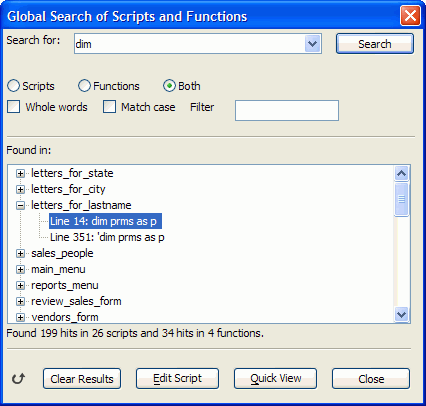

Using Global Search of Scripts and Functions
The Code tab in the Control Panel lets you search for a string in all of your global scripts and functions. You can search in all scripts and functions, or you can use wildcard character filters to limit the scripts and functions in which you search.
Display the Code tab, then select Code > Search Scripts and Functions.

The search results are shown in a tree control, showing the line number of each match. You can edit any of the scripts in the result set, moving directly to the line at which the match occurred.